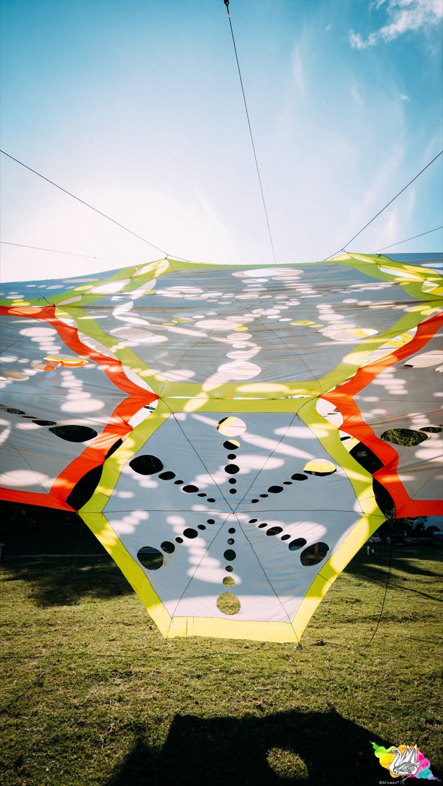
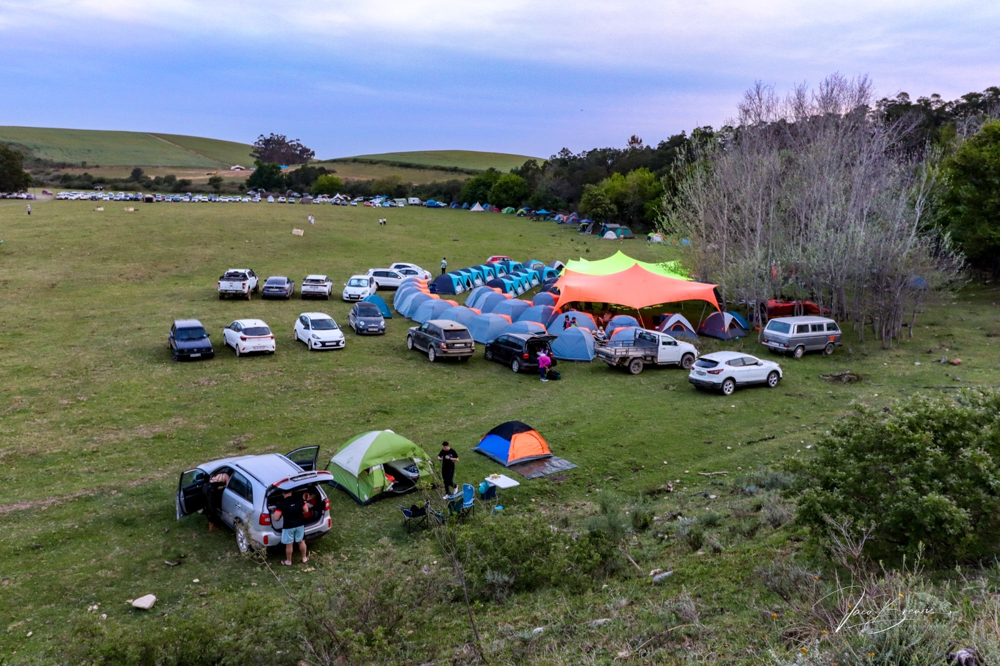
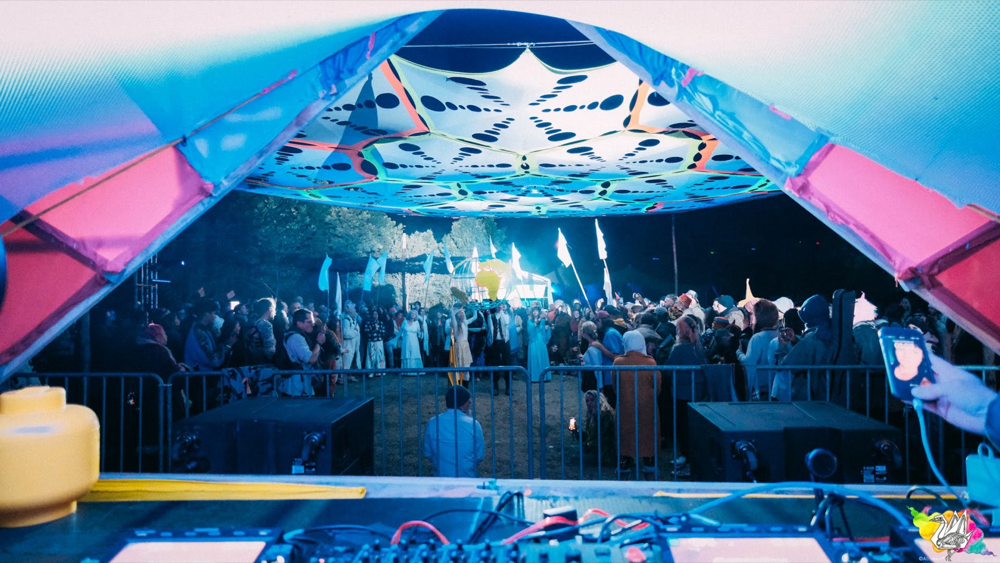

One gathering in a worldwide movement
Earthdance Cape Town is a local expression of something much bigger: a global family of gatherings that have been dancing for peace since 1997.
Dancing for peace since 1997
Earthdance was dreamed up by Chris Dekker, a New Zealander of Māori heritage who ran the London club and record label Return to the Source. The idea, as the story goes, came to him while meditating in a pyramid in Egypt: pinpoints of light erupting across the surface of the world.
On 4 October 1997 that vision became real — 22 parties across 18 countries, dancing at the same time, centred on the Tibetan cause as a symbol of freedom and spiritual consciousness. Two years later Dekker convened a gathering in Dharamsala, India, where Earthdance organisers met the Dalai Lama, then patron of the movement.
Since then, more than 700 Earthdance events have taken place in over 50 countries — Brazil to Japan, Europe to Australia — held around the International Day of Peace in September each year. Each gathering reflects its own local culture and scene, but all are joined by the same act: the Prayer for Peace, a synchronised moment shared across every Earthdance event in the world.
What unites the movement is a simple belief: that music, connection and collective intention can help build a more peaceful world. Not as an abstract slogan, but as something people practise together, on a dancefloor, once a year, everywhere at once.
"Pinpoints of light erupting across the world's surface" — one vision, 700+ gatherings, 50+ countries, and counting.
Earthdance Cape Town
Earthdance Cape Town is a three-day gathering of music, movement, creativity, connection and community, held on Kromrivier Farm in the Western Cape — about two hours from Cape Town, in open farmland between Greyton and Riviersonderend.
Musically, the weekend runs full-spectrum: psytrance, techno, drum & bass and acoustic sessions, carried by local artists and crews. Around the music sit workshops, art, ceremonies, gathering spaces and a curated market village.
Our gathering carries a few commitments of its own:
- a focus on consciousness, connection and community
- honouring our indigenous peoples, knowledge and spirituality
- the traditional values of PLUR — Peace, Love, Unity, Respect
It is a camping festival. People arrive, set up home for the weekend, and live alongside one another — through the music, the mornings, and the slower moments in between. That is part of the point.
South Africa has become one of the movement's strongholds, with four annual Earthdance gatherings — Johannesburg, Nelson Mandela Bay, the Garden Route and Cape Town. Ours is the one where spring opens between two mountain ranges, and where 2026's theme, Heart and Beat of Humanity, has been unfolding since a winter day at Love in a Bowl.



Earthdance Cape Town 2025 · Alison Swan Photography, Jaco Brewer · more in the gallery
Why the Prayer for Peace matters here
Every Earthdance gathering in the world pauses at the same time for the Prayer for Peace. In Cape Town, that moment lands on 19 September 2026.
It is the reason the event exists, and the thing that makes it different from any other outdoor music weekend. The festival is not a backdrop for the prayer, and the prayer is not an interlude in the festival — each gives the other its meaning.
Values we actually work from
These are not decoration. They are the tests we apply to how the event is built, who we work with, and how we behave on the farm.
Peace
The global linkup is the anchor. Everything else — the music, the market, the crews — supports that shared moment.
Participation
Earthdance is built by people, not staged for them. Vendors, volunteers and collaborators are part of the gathering, not services around it.
Music & movement
The dancefloor is where the community meets. We take the music seriously and keep it central.
Connection
Warm-up gatherings, community partners and shared spaces exist so that September is a meeting of people who already know each other.
Respect for people & place
Kromrivier is a working farm and a natural site. We arrive as guests, sort our waste, and leave no trace. Our policy →
The people behind the gathering
Earthdance Cape Town is produced by Soulstream Festivals, working with a wider circle of crews, artists, vendors, volunteers and community partners.
This year that circle includes Love in a Bowl, the Hout Bay community space where the journey to September began — a living project rooted in food, care, learning and local connection.
If you want to help build the gathering rather than just attend it, there is a place for you.
Join the gathering
Follow the journey that is already under way, or come straight to September.